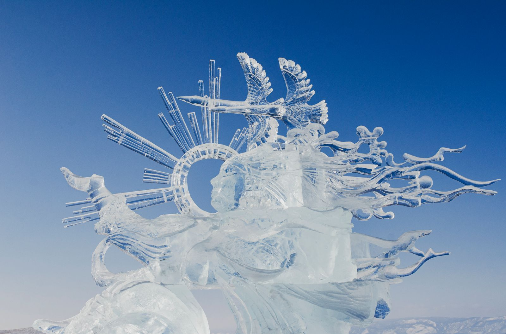

Case File 01 · Competition
The Diving Eagle
The brief
One design, six blocks, three carve days, a hall held at −9 °C. Eleven teams, the same ice, the same clock. The jury scores form first and detail second — in that order, whatever the carvers wish.
The decisions
The carve plan below is the one pinned to the hall wall. Feathers were cut at the standard 12 mm although the cold allowed finer: judging happens late on day three, under lights that warm the surface, and detail cut for hour one is not the detail the jury meets. The beak — the thinnest, proudest part — was pinned to the head with an ice dowel and frozen in, because a diving bird that loses its beak is a duck.
The outcome
Second of eleven. The jury's citation, quoted exactly: “the only entry that looked faster than the hall.” First place went to a Helsinki team's harbour seal, which was better. Both facts are printed at the same size, here and on the register.

| Day | Work | Hours |
|---|---|---|
| Day 1 | Blocks joined & squared (2 h) · rough-out by saw (3 h) · form blocked in (2 h) | 7 |
| Day 2 | Wings & body modelled (4 h) · head & beak, beak pinned (3 h) | 7 |
| Day 3 | Feather detail at 12 mm (4 h) · surface polish (1.5 h) · measure & sign-off (0.5 h) | 6 |
| Total | 6 blocks ÷ 0.30 blocks/h, Table C1 | 20 |
| Day 1 | −9.5 °C | Day 3 | −8.5 °C |
|---|---|---|---|
| Day 2 | −9.0 °C | Judging | −8.0 °C |